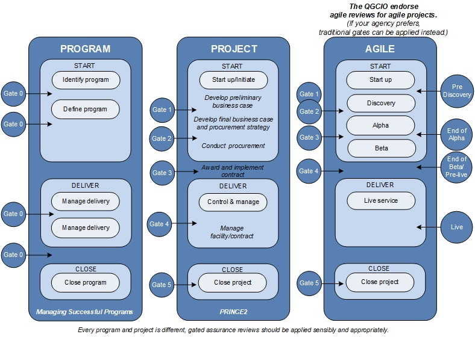

- Home
- Publications
- Services
- Strategy
- Information on...
- QGEA
- Information security
- Workforce planning
- Information management
- ICT risk management
- Digital and ICT strategic planning
- Sponsorship, scope and stakeholders
- Planning team and resources
- Current state
- Digital and technology trends
- Horizon scan
- Vision
- Strategic objectives
- Benefits, business changes and enablers
- Strategies
- Principles
- Target state architecture
- Risks and challenges
- Digital or ICT strategy or plan
- Gap analysis
- Roadmaps
- Initiative proposals
- Management of the portfolio
- Overview of methodology
- 2-page framework snapshot
- Best practice methodologies
- What's on
- News
- Welcome to our new and improved QGCIO website!
- 2017 IT Graduate training
- 2018 IT Graduates’ Induction
- IT Grad Program visits the UQ Careers expo
- GC2018 Cyber Security Unit update
- Towards a unified experience at 1 William Street
- An Agile website adventure
- 2018 Graduate training – Developing skills
- 2017 IT Graduates training - Achievements
- A new approach to records management
- SFIA7 has now been released
- IT Graduates speed networking
- IT Graduates visit UQ Big Day In
- Applications open for IT Graduate Program
- IT Graduates visit to QUT STEM students
- GovHack IT Grad team
- Women in Technology awards night
- IT Graduate Program - Award Finalist
- IT Graduate Program – What’s coming up
- IT Graduate involved in multicultural mentoring program
- 2017 IT Graduates Graduation
- Discover the Digital and ICT strategic planning framework
- Queensland Women in STEM prize
- Young Women Leaders in AI Program
- QGCIO talks Digital with the future leaders of Thailand’s Public Service
- Remade financial standard has commenced with broader focus on the best practice Queensland Government Enterprise Architecture
- Welcome to the QGCDG
- New and improved website feature launched
- Events
- CSU risk training for IT security practitioners
- 2018 Graduate meet and greet
- Portfolio Management Community of Practice
- 2018 IT Graduates induction
- Talk IT Up
- 2018 IT Graduates training
- 2018 IT Graduates training
- 2017 IT Graduates Lunchbox session
- 2017 & 2018 IT Graduates - Speed Networking session
- 2017 IT Graduate training - Thinking of the future
- IT Graduate Program team – visit QUT Business School students
- 2018 IT Graduates training – Planning and leading others
- Partner's in Technology
- 2018 IT Graduate training – The Leadership edge
- 2019 IT Graduates - coffee catch-up
- 2019 IT Graduate Intake – Meet and greet
- Partners in Technology
- Federated Identity and Information Sharing CoP
- News
- About us
Gated assurance
The role of assurance is to provide information to those that sponsor, govern and manage a project to help them make informed decisions to promote the conditions for success, reduce the causes of project failure, and deliver improved outcomes. The Queensland Government Program and project assurance policy and supporting framework provides a structured approach for assurance that leverages existing, industry recognised best practice methodologies.
What will agencies need to do?
- Use the assurance profiling tool to determine the assurance level of a program or project.
- Develop an assurance plan.
- Arrange assurance from an appropriate provider.
- Work with the Queensland Government Chief Information Office to monitor and report on assurance gates.
- Ensure that submissions to Investment Review are supported by appropriate assurance and resultant action plans.
Assurance obligations of digital and ICT-enabled programs and projects
Brian Phillips, Facilitator and Consultant, Yellowhouse Best Management Practice
Assurance gates
The Queensland Government endorse the use of the OGC GatewayTM Process that applies six focused reviews during the life of a program or project.

The following information describing each gate is found the Queensland Treasury's website and is based on material in the Successful Delivery Toolkit, UK Office of Government Commerce (OGC), 2007.
- Gate 0 Strategic assessment - Applies to programs and is conducted throughout a program's lifecycle to investigate and confirm direction and planned outcomes, together with the progress of its projects.
- Gate 1 Preliminary evaluation - Performed at the completion of the outline business case. It confirms the strategic importance of the initiative and its links to government and agency policy. The review confirms that the business case is robust.
- Gate 2 Business case - This review is performed before any formal approaches are made to prospective suppliers or partners. It will assess the viability, potential for success, value for money and proposed approach. This review confirms objectives and desired outputs remain aligned and ensures the procurement approach is robust, appropriate and approved.
- Gate 3 Contract award - Performed before contract sign-off or project delivery commencement. This review checks statutory and procedural requirements were followed and the recommended decision is likely to deliver on time, within budget and provide value for money.
- Gate 4 Readiness for service - Occurs once the asset or service is ready for delivery. This review checks system testing has been completed to user satisfaction and the business is ready to take over operation.
- Gate 5 Benefits realisation - This review examines benefits. It focuses on performance against a baseline and the continuing focus on measuring the project’s success in achieving its objectives and potential remedial actions.
Assurance for Agile projects
For Agile delivered projects, the QGCIO endorse the use of the United Kingdom Cabinet Office Infrastructure and Projects Authority “Guide on assurance for agile delivery of digital services” Annex A. However, if your agency prefers, traditional Gateway reviews can also be applied.
- Pre-discovery – Examines readiness to begin an agile project and will consider user needs, vision and outcomes, risk and issue controls and governance.
- End of Alpha - Reviews prioritisation of user needs, formation of Minimal Viable Product/s (deliverables) and continuing viability of business case.
- End of Beta/Pre live – Checks readiness of Minimal Viable Product/s (deliverables) to be released to end users and assesses project controls and operational readiness.
- Live – Confirms ongoing development and release management, benefits, lessons learned and knowledge transfer from project into the operational environment.
Examples
Templates
Knowledge
- What is gated assurance? (PPTX, 1422.12 KB)
- Program and project assurance policy
- Program and project assurance framework
- Assurance profiling tool
- Gated assurance checklist for program management products (PDF, 2617.8 KB)
- Gated assurance checklist for project management products (PDF, 2138.84 KB)
- Gated assurance checklist for agile project management products DRAFT ONLY (PDF, 479.14 KB)
- Gated assurance summary reports
- Gated assurance infographic for accountable officers (PDF, 109.52 KB)
- QRate–Assurance Services provides further information on available assurance suppliers.

Last Reviewed: 11 September 2019